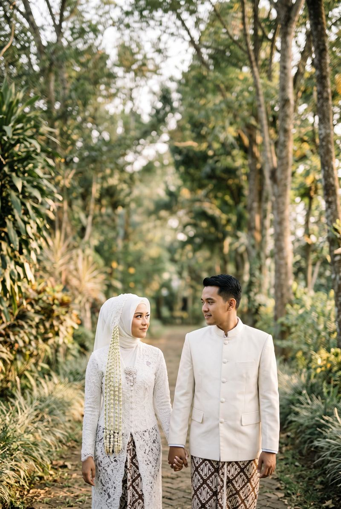
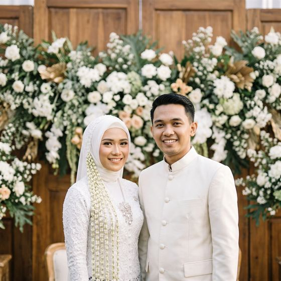
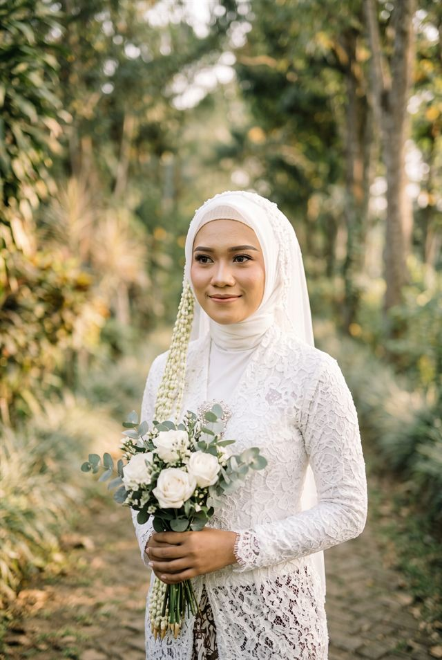
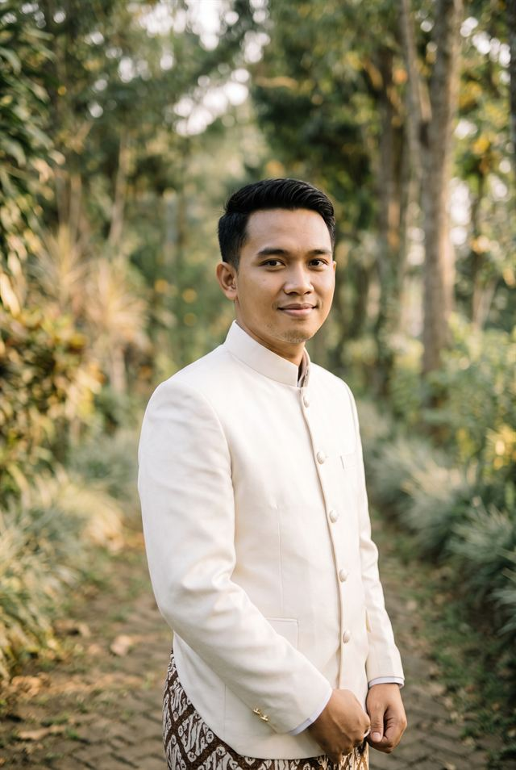
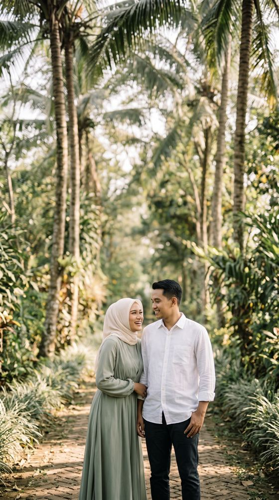
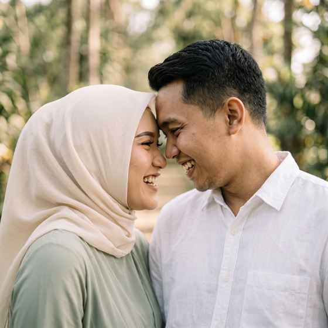
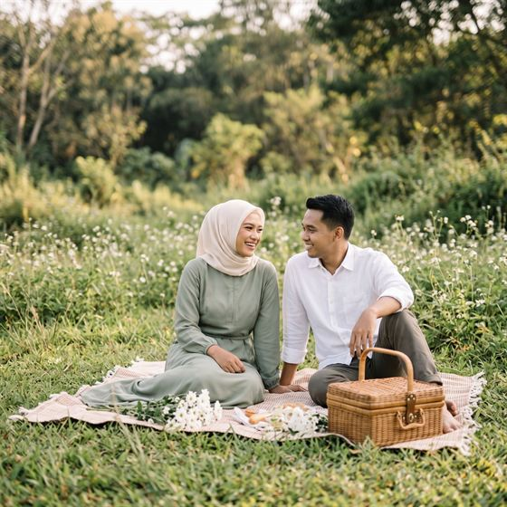
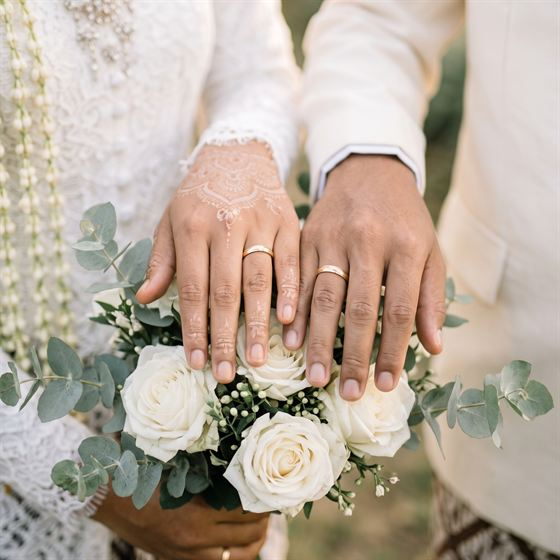
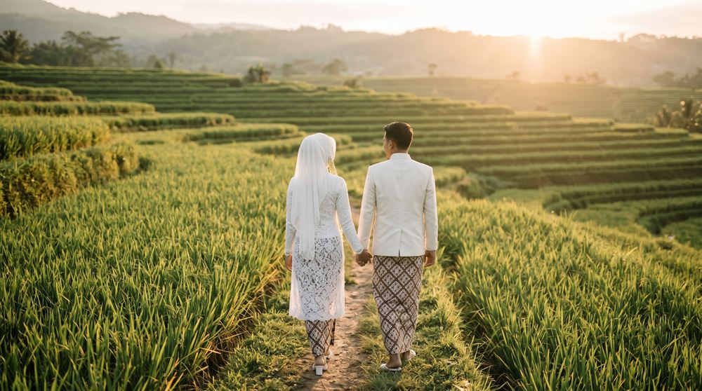

Akad Nikah
Lihat Lokasi

Kepada Yth. Bapak/Ibu/Saudara/iTamu Undangan

“Dan di antara tanda-tanda kekuasaan-Nya ialah Dia menciptakan untukmu pasangan hidup dari jenismu sendiri, supaya kamu merasa tenteram kepadanya, dan dijadikan-Nya di antaramu rasa kasih dan sayang.”QS. AR-RUM : 21
Dengan memohon rahmat dan ridho Allah SWT, kami bermaksud menyelenggarakan pernikahan putra-putri kami:

Putri dari Bapak Wiryo Hadi
& Ibu Sekar Arum

Putra dari Bapak Arif Hidayat
& Ibu Siti Aminah





Ketuk foto untuk memperbesar.
Mohon konfirmasi kehadiran Anda paling lambat 5 Desember 2026.
Doa restu Anda sudah lebih dari cukup. Namun bila ingin memberi tanda kasih, dapat melalui:
Jl. Contoh Raya No. 1, Denpasar, Bali
(a.n. Larasati Pramesti)
Merupakan suatu kebahagiaan dan kehormatan bagi kami apabila Bapak/Ibu/Saudara/i berkenan hadir dan memberikan doa restu.
Wassalamu’alaikum Warahmatullahi Wabarakatuh